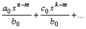

Масиви
int masiv[5];
Списъци
ü Линеен едносвързан списък
Struct List {
int
key;
List*
next;
}
1) Създаване
List* create
()
{ List* current, last, first=NULL;
int n;
while
(cin>>n)
{ current= new List;
current->key=n;
current->next=NULL;
if (first==NULL)
first=current;
//елементът е пръв в списъка
else
last->next=current;
last=current;
}
}
2) Търсене
bool check (List* first, int
el)
{ while (first != NULL)
if
(first->key==el) return true;
else
first=first->next;
return
false;
}
3) Изтриване
bool
delete_el (List* first, int el)
{ List* current=first, previous=NULL;
bool
found=false;
while
((!found) and (current != NULL))
{ if
(current->next==el)
{
if (previous==NULL) //елементът е пръв в списъка
{
previous=current;
current=current->next;
delete previous;
first=current;
}
else { previous->next= current->next;
delete current;
current= previous->next;
}
found=true;
}
else { previous=current;
current=current->next;
}
}
return
found;
}
Задача 1: Проверка дали даден списък е сортиран
Задача 2: Проверка
дали даден списък се съдържа в друг
Задача 3:
Проверка за цикличност на списък
Задача 4: Намиране
на най-често срещания елемент в списък
Задача 5: Размяна
местата на к-тия и n-тия елемент на списък
Задача 6: Сортиране
на списък
Задача
7: Работа с полиноми
Представяне:
·
С масив:
const int max=100;
struct polynom {
int count;
int coeff [max];
}
·
Със списък – разредени полиноми
struct polynom {
degree, coeff : int;
polynom* next;
}
Деление: f(x)=a0xn+a1xn-1+…+an,
g(x)= b0xm+b1xm-1+…+bm
Разделяме a0xn и b0xm.
f1(x)=f(x)-g(x) и т.н. докато получим полином със степен по-малка
от m – т.е. остатъкът.
=
Pn(x)= a0xn+a1xn-1+…+an
Pn(x)= an+x(an-1+x(an-2+…+x(a2+(a1+xa0))…))
P0(x)=a0
Pi(x)=ai+xPi-1(x),
i=1,2,…,n
Кръгови
полиноми: За всяко естествено число k разглеждаме по 1 полином Fk(x) на
променливата х. Дадено е, че ако за всяко естествено число n умножим онези полиноми Fk(x), чийто
индекс k дели n, полученото произведение е равно на полинома xn-1.
Например при n=1,
2, 3: F1(x)=x-1, F1(x)*F2(x)=x2-1,
F1(x)*F3(x)=x3-1
F2(x)=x+1, F3(x)=
x2+x+1
Да се напише програма,
която намира вида на Fk(x) за
възможно по-големи стойности на k
Задача
8: Работа с дълги числа – сравняване, събиране, изваждане,
умножение с цяло без знак, умножение на 2 числа, деление и т.н.
Задача 9:
Съвършени числа
Cp=2n-1(2n-1),
където n е просто. Търси се n – оттам и числата
Проверка за сумата от
реципрочните стойности на делителите=2, включително и самото число
Задача
10: Съставете програма, която за дадено n пресмята най-голямото цяло число р такова, че р3+р2+3p<=n. Цяло положително число n в десетична бройна система с k цифри (25<=k<=80) се нарича голямо число.
Входните данни се
въвеждат от ASCII файл с име INPUT.2
с два реда:
Първи ред: стойност на k
Втори ред: числото n с k цифри
Изход: Резултатът се извежда на екрана и съдържа само числото p.
Примерен
вход:
25
1881676387930733981457957
Примерен
изход:
123456789
ü Инвертирани списъци
struct Names {
string
name;
int
count;
Names*
next;
}
struct Employee {
Names*
n[3];
Employee*
next;
}
Задача 11: Информационна система
Задача
12: Да се открият максималните съвпадащи подсписъци в 2
дадени списъка.
Задача
13: Да се намери най-дългият нареден подсписък на даден
списък.
ü Линеен двусвързан списък
Struct List {
int
key;
List*
next, prev;
}
ü Цикличен списък;
ü Паралелен списък;
ü S-списък;
struct Stack {
int
key;
Stack*
next;
}
Stack* first;
1) Създаване
void CreateEmptyStack ()
{ first=NULL;
}
2) Включване
void push (int new_el)
{ Stack* p;
p=new
Stack;
p->key=new_el;
p->next=first;
first=p;
}
3) Изключване
int pop ()
{ Stack* p;
int value;
if
(first!=NULL)
{
p=first;
value=first->key;
first=first->next;
delete p;
return value;
}
return 0;
}
struct Queue {
int key;
Queue*
next;
}
Queue* top, bottom;
1) Създаване
void CreateEmptyQueue ()
{ top=NULL;
bottom=NULL;
}
2) Включване
void pushQ (int new_el)
{ Queue* p;
p=new
Queue;
p->key=new_el;
p->next=NULL;
if
(top==NULL) top=p;
else
bottom->next=p;
bottom=p;
}
3) Изключване
int popQ ()
{ Queue* p;
int value;
if
(top!=NULL)
{
p=top;
value=top->key;
top=top->next;
delete p;
return value;
}
return 0;
}
·
Двоично дърво
struct Tree {
int
key;
Tree*
left, right;
{
Преброяване общия
брой върхове:
int Count (Tree* root)
{ if (root==NULL) return 0;
return
Count(root->left)+Count(root->right)+1;
}
Задача:
Преброяване на листата в дърво.
Включване на елемент:
void PutInTree (Tree* root, int n)
{ if (root==NULL)
{
new root;
root->key=n;
root->left=NULL;
root->right=NULL;
}
else if
(root->key>n) PutInTree(root->left,n);
else
PutInTree(root->right,n);
}
Търсене на елемент:
bool Search (Tree* root, int n)
{ if (root==NULL) return false;
if
(root->key==n) return true;
if
(root->key>n) return Search(root->left);
else
return Search(root->right);
}
Задача: Да се напише програма за построяване на двоично дърво за претърсване, във
върховете на което са разположени цели положителни числа. Последователно като
вход на програмата постъпват цели числа. При въвеждане на отрицателно число M да се изтрива върхът, съдържащ числото –М, ако се намира в дървото. При
въвеждане на положително число да се създава нов връх, който съдържа това число
(ако вече няма такъв). Програмата прекратява работа при въвеждане на 0.
Намиране на дълбочина на дърво:
int MaxLen (Tree* root)
{ if (root==NULL) return –1;
int l, r;
l=MaxLen
(root->left);
r=MaxLen
(root->right);
if (l>r)
return l+1;
else
return r+1;
}
Задачи: Изтриване на цяло дърво, на връх от дървото. Създаване огледален образ на
дървото. Обхождане – извеждане на екрана (възможни начини). Аритметични изрази (извеждане, пресмятане).
·
Балансирано дърво
·
Идеално балансирано двоично дърво:
Построяване на идеално балансирано двоично дърво
от n елемента:
Tree* Locate ( int n)
{ if (n==0) return NULL;
Tree* node;
node=new
Tree;
cin>>n;
int l, r;
l=n/2;
r=n-l-1;
node->left=Locate(l);
node->right=Locate(r);
return node;
}
Задача: Родословно дърво съдържа информация за родителите и прародителите на
дадено лице: име, презиме, фамилия, пол, година на раждане, година на смъртта.
1. Създаване на дървото
2. Намиране всички
прародители на лицето, които имат същото име като неговото
3. Намиране всички прародители,
родени преди дадена дата
4. По зададени 2
родословни дървета проверява дали съвпадат
5. Определяне средната
продължителност на живота на всички прародители
6. Извеждане имената на всички прародители от
женски пол